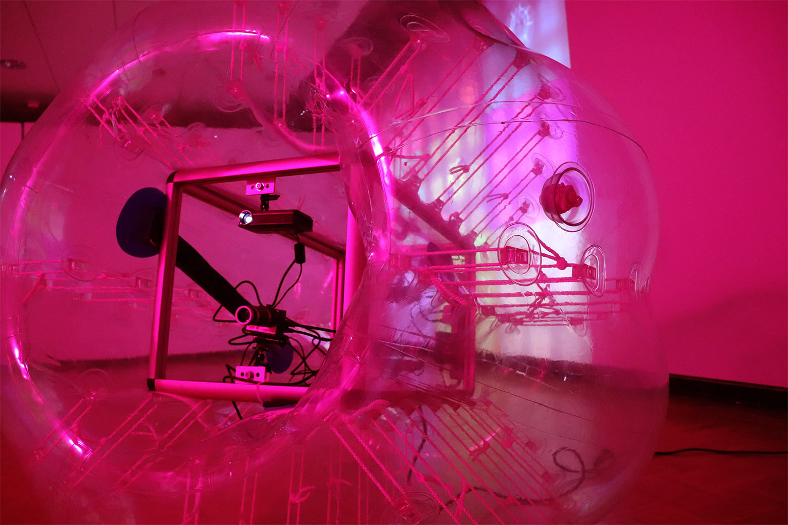
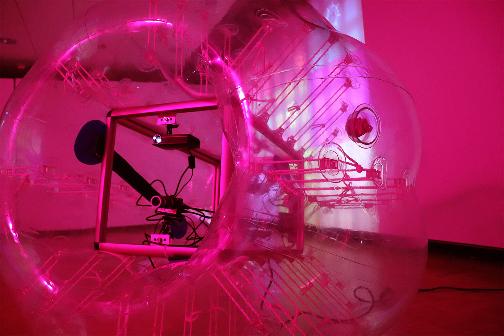

Emilio Martinez Poppe Work About Contact
Public Engagement Installation Performance Design Projects
Passage 16 Portals End Credits for the Places That Make Us Open Credits Sideroom Manifesto
2019
 

10 minute video loop, projector, 2 loudspeakers, playback computer, LED light fixture, plastic bumper ball, 2 GoPro cameras, 2 mini projectors, custom aluminum rig system
Passage is a multimedia installation consisting of a looping video projection with sound, an adapted readymade housing a live video feedback loop system, and LED lighting. The video consists of a 9 part split screen with 9 demonstrative performances I conducted repeatedly and stitched together in post production to multiply my figure. The demonstrations utilize the bumper ball present in the installation in routines emphasizing the tactility of its torus form and transparent material. The accompanying sonic score is a looping bass kick installed in an adjacent room to muffle the sound evoking the feeling of being outside of a dance club.
The adapted bumper ball contains an aluminum rig which houses a video feedback loop system made of GoPro cameras and projectors. Each GoPro produces a live feed that is projected from a mini projector on the other side that is then recorded by the opposing GoPro effectively creating a “mirrored” feedback loop. The ovular projection reveals what is directly opposed to it while also shining a light on what will appear on the other end of the loop. This effect is emphasized by the monochromatic light produced by the LED light fixture which makes full color projection more distinct. Viewers are invited to gently interact with this element of the work and explore the gaze of the device upon the video or themselves.